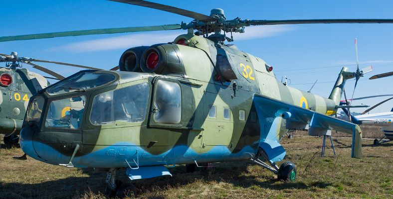
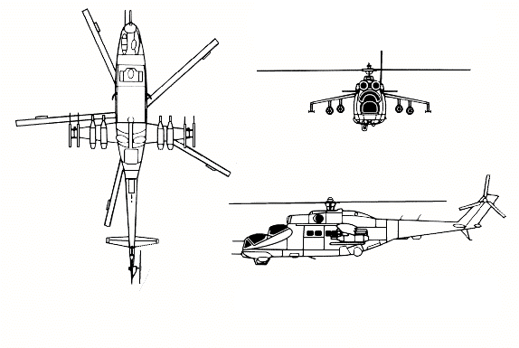
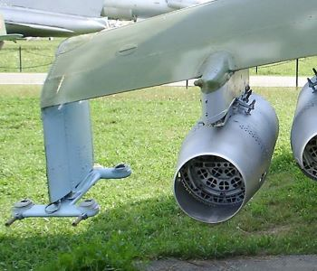
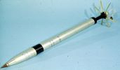
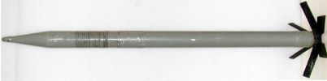
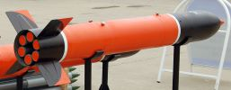
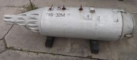

Мі-24П
Мі-24(Hind за класифікацією НАТО)
Мі-24 є одним із найвідоміших бойових вертольотів у світі. Став одним із символів Війни в Афганістані, де і отримав прізвисько "Крокодил".
.jpg "Мі-24П")
Проектування Мі-24 велося на основі транспортного вертольота Мі-8, що добре себе зарекомендував в експлуатації. Роботи з його створення очолив особисто Михайло Леонтійович Міль. Силова установка та динамічні системи були взяті від Мі-8 практично в незмінному вигляді, але п'ятилопатевий несучий гвинт серйозно допрацювали, зменшивши в діаметрі, а хвостовий гвинт перенесли з правого на лівий бік хвостової балки. У 1971 році ударно-транспортний вертоліт Мі-24 був запущений у серійне виробництво та прийнятий на озброєння Радянської Армії.
Його призначення - підтримка наземних військ, знищення бронетанкової техніки супротивника, висадка десанту, транспортування вантажів, евакуація поранених, боротьба з вертольотами противника. Концепція Мі-24 передбачала тісну взаємодію з бронетанковими та піхотними частинами в умовах бойових дій.
Живучість вертольота непогана. Життєво-важливі компоненти вертольота Мі-24П продубльовані та захищені сталевими листами. Завдяки цьому він може витримати в лобову проекцію чергу з 7,62 мм кулемету, а іноді, навіть, чергу з великокаліберних кулеметів. Бронювання також може захистити від шаленого влучання з великокаліберних гармат, але не більше.
На першій серійній модифікації стрілок-оператор і льотчик перебували у загальній кабіні, на наступних – за схемою «тандем» (кабіна стрільця-оператора перебуває попереду). Обидві кабіни герметизовані та обладнані системою кондиціонування повітря, що дає можливість вести бойові дії в умовах хімічного та радіаційного зараження місцевості та широкому діапазоні температур. Вантажна кабіна дозволяє розмістити вісім десантників зі штатним озброєнням та боєприпасами.
Мі-24А — перша серійна модифікація
Мі-24П - це модифікація радянського багатоцільового вертольота Мі-24, яка серійно випускалася з 1981 по 1989 роки. Основною відмінністю вертольота від попередніх модифікацій була заміна турелі з великокаліберним кулеметом ЯкБ-12,7 на авіаційну гармату ГШ-30К, яка жорстко закріплювалася на правому борту фюзеляжу.
Український варіант модернізації радянського ударного вертольота Мі-24П - Мі-24ПУ1.
ЛТХ Мі-24П
Екіпаж - 2 чол
Двигуни типу ТВД ТВ3-117 – 2 по 2200кс
Максимальна швидкість – 335км/год
Крейсерська швидкість – 270км/год
Статистична стеля – 1500м
Динамічна стеля – 4500м
Дальність перегону – 1000км
Дальність дії – 224км
Максимальна злітна маса – 12000кг
Нормальна злітна маса – 11200кг
Маса порожнього вертольота – 8200кг
Максимальне бойове навантаження - 2500кг
Кількість перевозимих людей – 8 десантників
Кількість перевозимих людей – 4 поранених
Габарити вертольота:
Діаметр несучого гвинта – 17,3м
Діаметр хвостового гвинта – 1,5м
Довжина – 17,52м
Висота – 3,9м
Ширина – 1,7м
Озброєння
МІ - 24 є носієм не лише стрілецько-гарматного озброєння та протитанкових комплексів. До складу озброєння входять також підвісні пускові установки некерованих ракет калібром 57, 80 та 240 мм.
На пілонах вертольота можуть підвішуватися також авіабомби різного призначення масою до 500 кілограм і баки із запальною сумішшю.
Курсове озброєння
Основним озброєнням Мі-24П є авіаційна двоствольна автоматична 30-мм гармата ГШ-30К (Грязєва-Шипунова) з боєкомплектом 250 набоїв. Живлення - стрічкове. Швидкострільність складає 2598 пострілів/хвилину. Ця гармата чудово справляється зі знищенням авіації та легкоброньованих наземних цілей. Однак варто враховувати, що гармата жорстко закріплена і наведення виконується за допомогою корпусу.
Гармата має наступну номенуклатуру боєприпасів:
Б - бронебійний каморний набій
БТ - бронебійний-трасуючий набій
ОФЗТ - осколково-фугасний запальний трасуючий набій
Стрічки з набоями поділяються на:
Стандартна -> Б-ОФЗТ
Універсальна -> БТ-ОФЗТ-Б-ОФЗТ
Наземні цілі -> БТ-Б
Повітряні цілі -> Б-ОФЗТ-ОФЗТ-ОФЗТ
Підвісне озброєння
На крилах гелікоптера розміщуються 6 вузлів підвіски, з яких два вузли можуть використовуватися виключно для підвісу ПТКРів.
Крайні вузли для підвісу виключно ПТКРів
Серед підвісного озброєння є блоки НАР, зокрема НАРи: 55мм С-5, 80мм С-8, 240мм С-24Б, ПТРК Штурм-В,керовані ракети класу "повітря-повітря" Р-60, Р-60М, авіаційні фугасні, кластерні, напалмові та димові бомби калібрів: 250кг, або 500кг та контейнери УПК-23-250 з 23-мм гарматою ГШ-23Л і 250 набоями.
НАРи: 55мм С-5, 80мм С-8, 240мм С-24Б
Для запуску НАРів використовуються різноманітні ПУ:
УВ-32-57
УВ-20-57
УВ-20-80

УВ-32-57 та УВ-20-80


Фаб-250 та Фаб-500